Chapter 2. 블록 암호¶
1절. Block and Stream Ciphers
2절. Ideal Block Cipher
3절. Feistel Cipher
4절. Data Encryption Standard
5절. Brute-Force Attack
1절. Block and Stream Ciphers¶
블럭 암호(Block Cipher)¶
- 메시지를 블럭 단위로 처리한 후 각 메시지를 암호화 / 해독
- 현재 대부분의 암호는 블럭 암호 사용
- 왜?
- 더 나은 분석
- 더 넓은 적용범위
- 왜?
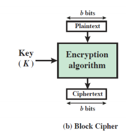
스트림 암호(Stream Cipher)¶
- 암호화 / 해독 시 메시지를 한 번에 비트 또는 바이트 단위로 처리
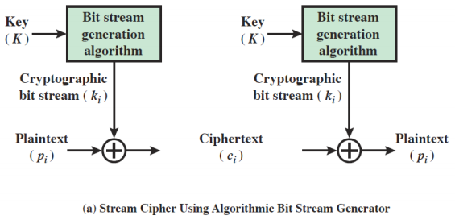
- 키를 먼저 입력받은 후에 XOR 연산을 진행하는 방식
기본적인 사실¶
- 데이터를 블럭처럼 모은 후 사용
- 가역적(이상적인) 맵핑형태
- 재사용(일대일 변환의 형태) 가능
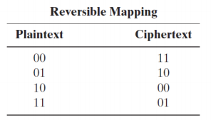
-
2비트 / 2열 4행의 형태
-
비가역적 맵핑형태
- 재사용 불가능
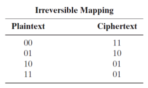
-
2비트 / 2열 4행의 형태
-
\(n\)비트의 평문 블럭이 사용될 경우
- \(2^n\)개의 가능한 서로 다른 평문 블럭 존재
- 가역적 매핑 수는 \(2^n ⋅ (2^n-1) ⋅⋅⋅ 1 = 2^n!\)
- 테이블로 정의된 키의 길이는 \(2^n ⋅ n\)
- \(n\)이 커질수록 값 증가
2절. Ideal Block Cipher¶
이상적인 블럭 암호¶
- 가역적 맵핑(일대일 대응)
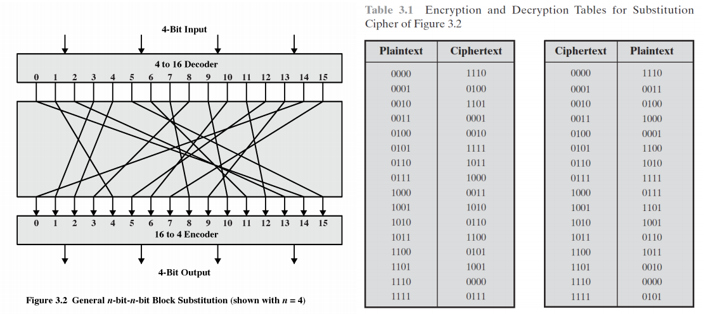
치환-순열 암호(Substitution-Permutation Ciphers)¶
- 클로드 섀넌(Claude Shannon)은 1949년 논문에서 치환-순열(S-P) 네트워크 개념 소개
- S와 P를 섞는 형태
-
S-P 네트워크
- 현대 블럭 암호의 기초
- 두 가지 기본 암호화 작업을 기반
- 치환(Substitution) : S-box
- 순열(Permutation) : P-box
-
3라운드(3번의 과정) 치환-순열 네트워크
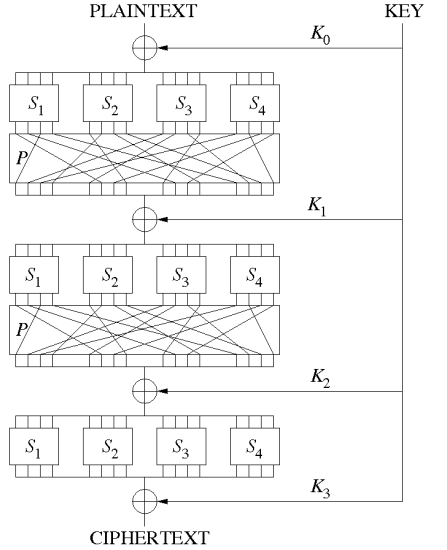
3절. Feistel Cipher¶
파이스텔 암호 구조¶
- 섀넌(Shannon)의 S-P 네트워크에서 S-box는 역함수가 존재해야 함(가역성)
- 파이스텔 네트워크
- S-box가 역함수가 존재해야 한다는 조건 필요 X
- 역함수가 존재하지 않더라도 역함수가 존재한 기능을 수행하는 방법
- 비가역 요소로부터 가역 함수의 기능 실행
- 이유
- 수신자와 송신자 모두 XOR 연산을 진행하기 때문
- 이유
- 과정을 뒤집으면 모양이 일치하기 때문에 암호화와 복호화 알고리즘을 둘 다 짤 필요 X
- 일반적으로 16라운드로 진행
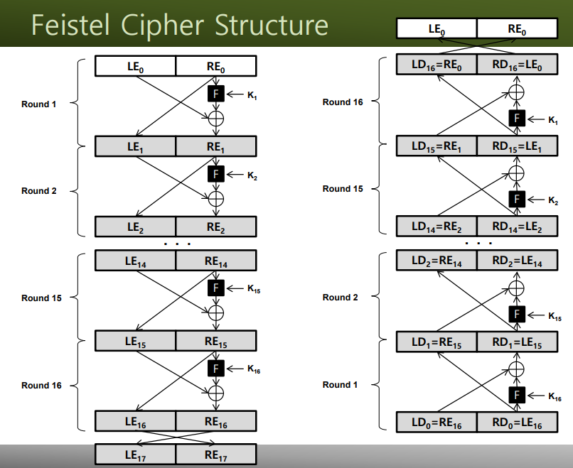
- 파이스텔 암호 디자인 요소
- 블럭 사이즈
- 키 사이즈
- 라운드마다 키가 존재하고 하나의 마스터 키 존재
- 라운드의 수
- 서브 키 생성 알고리즘
- 라운드 함수
XOR의 성질¶
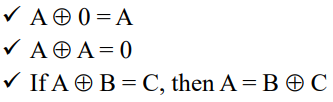
-
\(((A ⊕ B) ⊕ B) = (A ⊕ (B ⊕ B)) = C ⊕ B = A ⊕ 0\)이므로 \(A = B ⊕ C\)
-
파이스텔 구조와 관련된 XOR 연산 예제
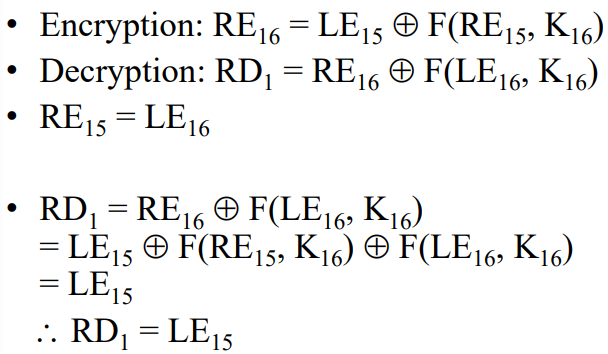
4절. Data Encryption Standard¶
DES란?¶
- 데이터 암호 표준화 기준
- 파이스텔 구조와 비슷하게 일반적으로 16라운드 사용
- \(2^{128}\)에서 \(2^{64}\)로 안전도를 줄인 형태
- \(2^{64}\)배의 안전도 감소
- 1977년 NBS(현 NIST)에 의해 FIPS PUB 46으로 채택
- 56비트 키가 있는 64비트 데이터 블록
- 64비트를 각각 32비트로 나누어서 연산
- 56비트가 되는 이유는 8비트의 패리티 비트도 포함하기 때문
DES의 역사¶
- 1960년대 후반, IBM은 Horst Feistel이 이끄는 연구 프로젝트 시작
- 위의 프로젝트는 1971년 루시퍼 암호(Lucifer Cipher)의 개발로 마무리
- 루시퍼 암호(Lucifer Cipher)는 64비트 데이터 블록과 128비트의 키를 갖춘 파이스텔 블록 암호
- NSA 및 기타 기관의 도움으로 상업용 암호로 재개발
- 1973년 NBS가 국가 암호 표준에 대한 제안 요청
- IBM은 DES로 승인된 수정된 루시퍼 암호(Lucifer Cipher) 제출
DES의 디자인 논란¶
- DES 56비트 키 VS Lucifer 128비트 키
- DES 56비트 키는 \(2^{56}\)
- Lucifer 128비트 키는 \(2^{128}\)
- 실제로 \(2^{72}\)의 안전도 하락
- 설계 기준의 분류(예 : S-box)
- 하드웨어 친화적 설계
DES의 구조¶
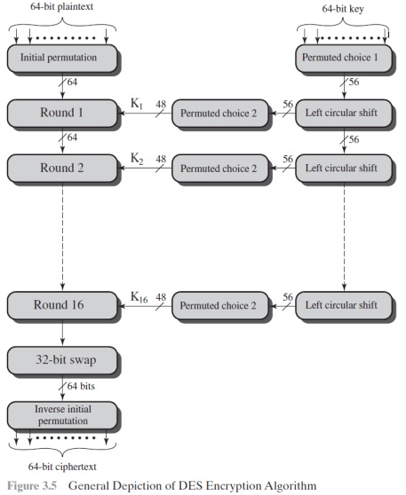
\(IP\)와 \(IP^{-1}\)¶
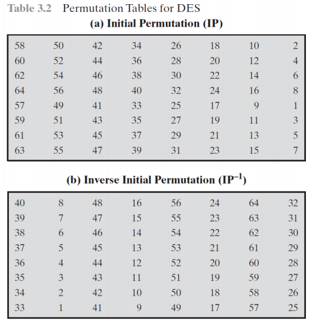
\(IP\)와 \(IP^{-1}\)의 예제¶
- IP는 입력 데이터 비트 짝수 비트를 왼쪽 절반으로, 홀수 비트를 오른쪽 절반으로 재정렬
- 표에서 위 4줄은 짝수, 아래 4줄은 홀수의 형태
- 위는 왼쪽, 아래는 오른쪽을 의미
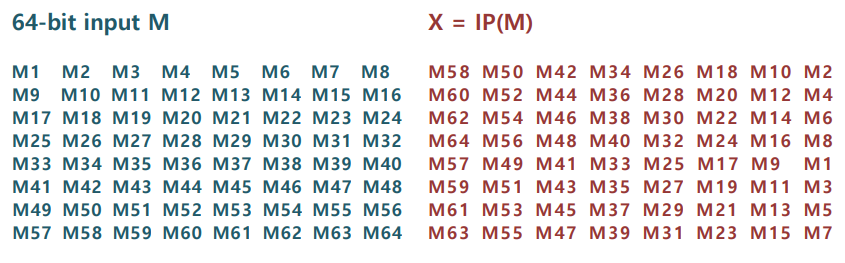
- \(Y=IP^{-1}(X)=IP^{-1}(IP(M))\)
DES의 라운드 구조¶
- DES
- 2개의 32비트 L과 R 절반을 사용
- 파이스텔 암호
- DES는 아래와 같이 묘사
- \(L_i = R_{i-1}\)
- \(R_i = L_{i-1} ⊕ F(R_{i-1}, K_i)\)
- \(F\)는 32비트의 \(R\) 절반과 48비트의 서브 키 보유
- 확장된 순열(expansion permutation) \(E\)를 사용하여 \(R\)을 48비트로 확장
- XOR연산을 이용하여 서브 키 추가
- 8개의 S-box를 통과하여 32비트의 결과 획득
- 최종적으로 32비트의 순열 \(P\)를 사용하여 키 정상 배열
- DES는 아래와 같이 묘사
DES의 단일 라운드¶
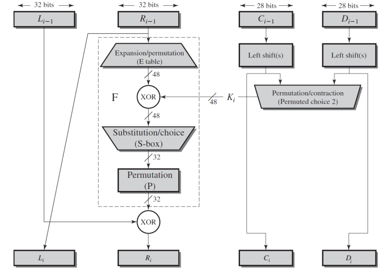
\(E\) 와 \(P\)¶
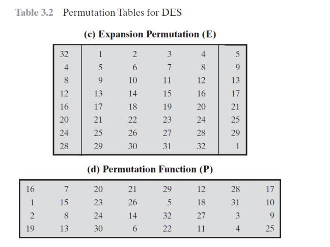
라운드 함수 \(F\)¶
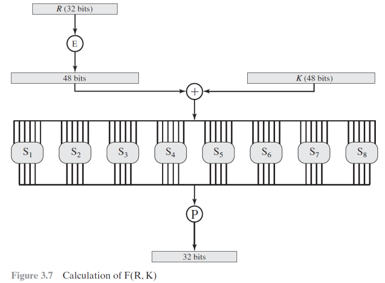
치환 박스¶
- 각 S-box는 6비트 입력을 4비트 출력으로 맵핑
- 0 ~ 15의 16개 숫자가 64칸에 맞춰 반복
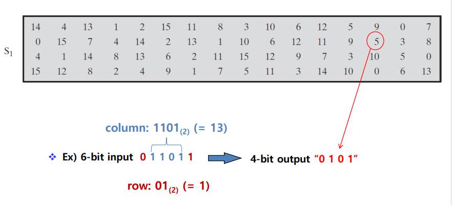
DES 키의 과정¶
- 64비트 키의 모든 8번째 비트는 무시(패리티 비트)
- Permuted Choice one(PC-1)은 두 개의 \(C_0\) 및 \(D_0\)에서 56비트의 절반인 28비트씩 키 선택
- 16개 스테이지의 구성
- 키의 순환 과정에 맞춰 각 절반을 별도로 1 ~ 2곳씩 순환
- 48비트를 선택하고 라운드 함수 \(F\)에 사용하기 위해 Permuted Choice two(PC-2)로 순열
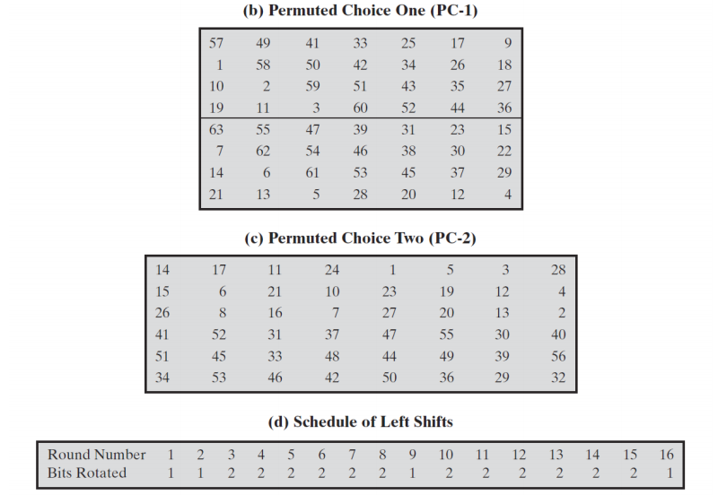
- PC-1
- 56비트이며 \(8n\) 비트들은 패리티 비트
- PC-2
- 48비트이며 1 ~ 56 숫자들 중 랜덤 제외
- Schedule of Left Shifts
- Bits Rotated
- 전체 합은 28이며 \(56 / 2 = 28\)이므로 28비트만큼 이동
- 몇 칸을 이동했는지 체크
- Bits Rotated
DES의 예제¶
- DES의 예시
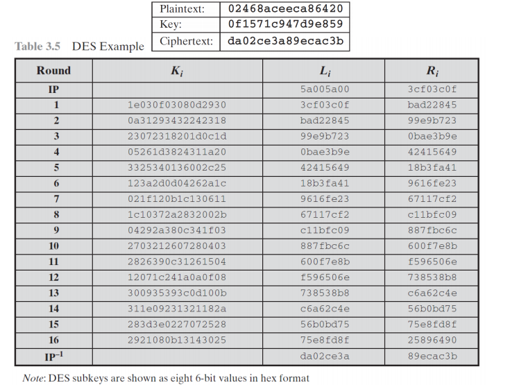
- DES에서의 눈사태 효과
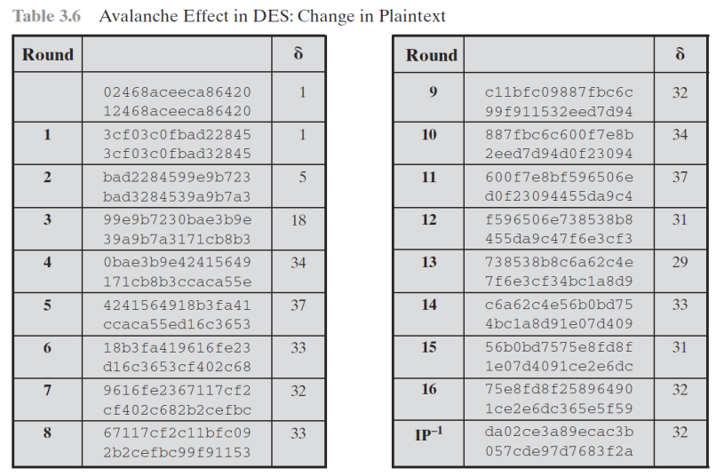
- 16라운드의 과정
- 서로 다른 두 입력을 통해 다른 비트 수가 32가 될 때까지 반복
- 32비트가 다르게 되면 암호화 알고리즘을 정확하게 파악 가능
- 일반적으로 다른 비트 수가 0, 64인 경우는 불가능
5절. Brute-Force Attack¶
브루트 포스 공격¶
- 모든 암호의 가장 기본적인 해독 방법
- 가능한 모든 키를 차례로 시도
- 키의 길이에 따라 가능한 키의 수가 결정
- 하드웨어의 성능에 따라 실행 가능성의 차이
- 그러나 현대에는 컴퓨터 및 반도체의 빠른 대용량 처리가 가능해지면서 실제로 유용
브루트 포스 알고리즘¶
- 모든 경우의 수를 계산한 후 결과를 도출하는 알고리즘
EFF의 DES 전용 해독기¶
- 1998년에 사이버 공간 민권 단체(EFF : Electronic Frontier Foundation)는 약 250,000달러의 비용을 들여 DES 전용 해독기 제작
- 2일이 조금 넘는 시간동안 브루트 포스 공격을 통해 암호 해독